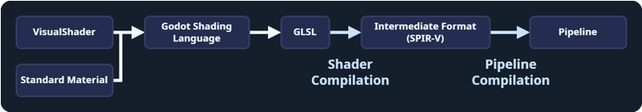
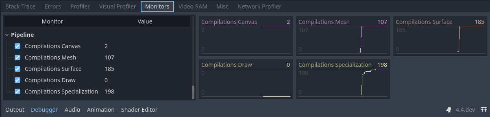

Giảm giật lag do biên dịch shader (pipeline)
Cảnh báo
Trang này chỉ áp dụng cho trình kết xuất Forward+ và Mobile, không áp dụng cho Compatibility. Ubershader và biên dịch trước pipeline dựa vào các chức năng chỉ có trong các API đồ họa cấp thấp hiện đại (Vulkan, Direct3D 12, Metal). Trình kết xuất Compatibility dùng OpenGL 3.3, OpenGL ES 3.0 hoặc WebGL 2.0 tùy theo nền tảng. Các phiên bản này thiếu chức năng cần thiết để triển khai hiệu quả ubershader và biên dịch trước pipeline.
Để tránh giật lag do shader trong Compatibility, bạn cần dùng cách truyền thống là tải trước material, shader và particle bằng cách hiển thị chúng ít nhất một frame trong view frustum khi màn chơi đang tải.
Biên dịch pipeline, còn thường được gọi là biên dịch shader, là một thao tác tốn kém mà engine cần thực hiện để có thể vẽ bất kỳ loại nội dung nào bằng GPU.

Shader và material trong Godot đi qua một số bước trước khi có thể được GPU chạy.
Nói chính xác hơn, biên dịch shader là việc chuyển đổi mã GLSL mà Godot tạo ra thành một định dạng trung gian có thể chia sẻ giữa các hệ thống (chẳng hạn SPIR-V khi dùng Vulkan). Tuy nhiên, GPU không thể dùng trực tiếp định dạng này.
Biên dịch pipeline là bước mà driver GPU chuyển định dạng shader trung gian (kết quả của biên dịch shader) thành thứ mà GPU thực sự có thể dùng để kết xuất. Driver thường giữ một bộ nhớ cache các pipeline được lưu ở đâu đó trong hệ thống để tránh lặp lại quá trình mỗi lần chạy game. Cache này thường bị xóa khi driver được cập nhật.
Pipeline chứa nhiều thông tin hơn chỉ mã shader, nghĩa là với mỗi shader, có thể có hàng chục pipeline hoặc hơn! Điều này khiến engine khó biên dịch chúng trước, vừa vì sẽ rất chậm, vừa vì sẽ chiếm nhiều bộ nhớ. Hơn nữa, bước này chỉ có thể thực hiện trên hệ thống của người dùng và rất khó chia sẻ kết quả giữa những người dùng trừ khi họ có cùng phần cứng và phiên bản driver.
Trước Godot 4.4, không có giải pháp nào cho biên dịch pipeline ngoài việc tạo chúng khi một đối tượng xuất hiện trong tầm nhìn của camera, dẫn đến hiện tượng shader stutter khét tiếng, hay những lần khựng hình chỉ xảy ra trong lần chơi đầu tiên. Với Godot 4.4, các cơ chế mới đã được giới thiệu để giảm thiểu giật lag do biên dịch pipeline.
Ubershader: Godot sử dụng specialization constant (hằng số chuyên biệt hóa), một tính năng cho phép driver tối ưu mã của pipeline dựa trên một tập tham số như chiếu sáng, chất lượng bóng đổ, v.v. Specialization constant được dùng để tối ưu shader bằng cách hạn chế các tính năng không cần thiết. Thay đổi một specialization constant đòi hỏi phải biên dịch lại pipeline. Ubershader là một phiên bản đặc biệt của shader có thể thay đổi các hằng số này trong khi kết xuất, nghĩa là Godot chỉ cần biên dịch trước một pipeline và biên dịch các phiên bản tối ưu hơn ở chế độ nền trong khi chơi. Điều này giảm đáng kể số pipeline cần được tạo.
Biên dịch trước pipeline: Bằng cách dùng ubershader, engine có thể biên dịch trước pipeline ở nhiều nơi, chẳng hạn khi mesh được tải hoặc khi node được thêm vào scene. Nhờ là một phần của quá trình tải resource, pipeline thậm chí có thể được biên dịch trước trên nhiều luồng nền nếu có thể, trong các màn hình tải hoặc ngay cả khi đang chơi.
Bắt đầu từ Godot 4.4, Godot sẽ phát hiện những pipeline nào cần thiết và biên dịch trước chúng lúc tải. Hệ thống phát hiện này phần lớn là tự động, nhưng nó dựa vào việc RenderingServer nhìn thấy dấu hiệu của tất cả shader, mesh hoặc tính năng kết xuất lúc tải. Ví dụ, nếu bạn tải một mesh và shader trong khi game đang chạy, pipeline cho tổ hợp mesh/shader đó sẽ không được biên dịch cho đến khi mesh/shader được tải. Tương tự, những việc như bật MSAA hoặc tạo instance một node VoxelGI trong khi game đang chạy sẽ kích hoạt việc biên dịch lại pipeline.
Monitor biên dịch trước pipeline
Biên dịch trước pipeline là cơ chế chính mà Godot dùng để giảm thiểu giật lag do shader, nhưng nó không phải giải pháp hoàn hảo. Nắm được những tình huống có thể dẫn đến giật lag do pipeline sẽ rất hữu ích, và các cách khắc phục khá đơn giản so với các phiên bản trước. Các cách khắc phục này có thể sẽ ít cần thiết hơn theo thời gian với các phiên bản Godot sau này khi có thêm nhiều kỹ thuật phát hiện được triển khai.
Trình gỡ lỗi của Godot cung cấp các monitor để theo dõi số lượng pipeline mà game tạo ra và bước đã kích hoạt việc biên dịch chúng. Bạn có thể để mắt đến các monitor này khi game chạy để xác định các nguồn gây giật lag do shader tiềm ẩn mà không phải xóa cache driver mỗi lần muốn kiểm thử. Những lần tăng đột ngột của các giá trị này bên ngoài màn hình tải có thể biểu hiện thành những lần khựng hình trong khi chơi vào lần đầu tiên ai đó chơi game trên hệ thống của họ. Bạn nên xem các monitor này để xác định các nguồn có thể gây giật lag cho người chơi, vì bản thân bạn có thể không gặp phải chúng nếu không xóa cache driver hoặc kiểm thử trên một hệ thống yếu hơn.

Biên dịch pipeline của một trong các dự án demo.
Ghi chú
Chúng ta có thể thấy các pipeline được biên dịch trong khi chơi và xác minh những bước nào có thể gây giật lag. Lưu ý rằng các giá trị này chỉ tăng chứ không bao giờ giảm, vì các pipeline đã bị xóa không được các monitor này theo dõi và pipeline có thể bị xóa rồi tạo lại trong khi chơi.
Canvas: Được biên dịch khi vẽ một node 2D. Hiện engine chưa có tính năng biên dịch trước cho các phần tử 2D và giật lag sẽ xuất hiện khi node 2D được vẽ lần đầu tiên.
Mesh: Được biên dịch như một phần của việc tải mesh 3D và xác định những pipeline nào có thể được biên dịch trước từ các thuộc tính của nó. Những pipeline này có thể gây giật lag nếu mesh được tải trong khi chơi, nhưng có thể giảm thiểu nếu mesh được tải bằng một luồng nền. Các thành phần sửa đổi thuộc về node như material override không thể được biên dịch ở bước này.
Surface: Được biên dịch khi một frame sắp được vẽ và các đối tượng 3D được tạo instance trên scene tree lần đầu tiên. Bước này cũng có thể bao gồm việc biên dịch cho các node thậm chí không hiển thị trên scene tree. Giật lag sẽ chỉ xảy ra ở frame đầu tiên mà node được thêm vào scene, và sẽ không gây giật lag rõ rệt nếu nó xảy ra ngay sau một màn hình tải.
Draw: Được biên dịch theo nhu cầu khi một đối tượng 3D cần được vẽ và một ubershader chưa được biên dịch trước. Engine không thể biên dịch trước pipeline này do gặp phải một trường hợp chưa được xử lý hoặc do một thay đổi đã được thực hiện trên mã của engine. Gây giật lag trong khi chơi. Điều này giống hệt các phiên bản Godot trước 4.4. Nếu bạn thấy có biên dịch ở đây, vui lòng báo cho các nhà phát triển vì điều này không bao giờ nên xảy ra với hệ thống Ubershader. Hãy nhớ đính kèm một dự án tái hiện tối giản khi báo cáo.
Specialization: Được biên dịch ở chế độ nền trong khi chơi để tối ưu framerate. Không thể gây giật lag, nhưng có thể làm giảm framerate nếu có nhiều lần biên dịch diễn ra trong mỗi frame.
Các tính năng biên dịch trước pipeline
Godot cung cấp nhiều tính năng kết xuất không nhất thiết được mọi game sử dụng. Tiếc là hệ thống biên dịch trước pipeline không thể biết trước một tính năng cụ thể có được dự án sử dụng hay không. Một số tính năng chỉ có thể được phát hiện khi người dùng thêm một node vào scene hoặc bật/tắt một cài đặt cụ thể trong dự án hoặc trong environment. Hệ thống biên dịch trước pipeline sẽ theo dõi các tính năng này khi chúng được gặp lần đầu tiên và bật biên dịch trước cho chúng đối với mọi mesh hoặc surface được tạo sau đó.
Nếu game của bạn sử dụng các tính năng này, hãy đảm bảo có một scene dùng chúng sớm nhất có thể trước khi tải phần lớn asset. Scene này có thể rất đơn giản và sẽ làm được việc miễn là nó dùng các tính năng mà game định sử dụng. Nó thậm chí có thể được kết xuất ngoài màn hình trong ít nhất một frame nếu cần, ví dụ bằng cách che nó bằng một node class_ColorRect hoặc dùng một class_SubViewport đặt bên ngoài biên cửa sổ.
Bạn cũng nên lưu ý rằng việc thay đổi bất kỳ tính năng nào trong số này trong khi chơi sẽ gây giật lag ngay lập tức. Hãy đảm bảo chỉ thay đổi các tính năng này từ màn hình cấu hình nếu cần, và chèn màn hình tải cùng thông báo khi áp dụng thay đổi.
MSAA Level: Được bật khi mức MSAA 3D được thay đổi trong cài đặt dự án. Tiếc là việc dùng các mức MSAA khác nhau trên các viewport khác nhau sẽ gây giật lag vì engine chỉ theo dõi một mức tại một thời điểm để thực hiện biên dịch trước.
Reflection Probes: Được bật khi một node ReflectionProbe được đặt vào scene.
Separate Specular: Được bật khi dùng các hiệu ứng như sub-surface scattering hoặc một hiệu ứng compositor dựa vào việc lấy mẫu specular trực tiếp từ màn hình.
Motion Vectors: Được bật khi dùng các hiệu ứng như TAA, FSR2 hoặc một hiệu ứng compositor cần motion vector (chẳng hạn motion blur).
Normal and Roughness: Được bật khi dùng SDFGI, VoxelGI, phản chiếu không gian màn hình (screen-space reflections), SSAO, SSIL, hoặc khi dùng
normal_roughness_buffertrong một shader tùy chỉnh hoặc class_CompositorEffect.Lightmaps: Được bật khi một node LightmapGI được đặt vào scene và có node dùng lightmap đã bake.
VoxelGI: Được bật khi một node VoxelGI được đặt vào scene.
SDFGI: Được bật khi WorldEnvironment bật SDFGI.
Multiview: Được bật cho các dự án XR.
16/32-bit Shadows: Được bật khi cấu hình độ chính xác độ sâu của shadowmap được thay đổi trong cài đặt dự án.
Omni Shadow Dual Paraboloid: Được bật khi một đèn omni đổ bóng và dùng chế độ dual paraboloid.
Omni Shadow Cubemap: Được bật khi một đèn omni đổ bóng và dùng chế độ cubemap (đây là chế độ mặc định).
Nếu bạn gặp giật lag trong khi chơi và các monitor báo cáo số lần biên dịch tăng đột ngột ở bước Surface, rất có thể một tính năng đã không được bật trước. Đảm bảo hiệu ứng này được bật trong khi tải game nhiều khả năng sẽ giảm thiểu được vấn đề.
Tạo instance để biên dịch trước pipeline
Một nguồn gây giật lag phổ biến trong game là việc một số hiệu ứng chỉ được tạo instance trên scene do các tương tác chỉ xảy ra trong khi chơi. Ví dụ, nếu bạn có một hiệu ứng particle chỉ được thêm vào scene thông qua script khi người chơi thực hiện một hành động. Ngay cả khi scene đã được tải trước, engine có thể không biên dịch trước được các pipeline cho đến khi hiệu ứng được thêm vào scene ít nhất một lần.
May mắn là từ Godot 4.4 trở đi có thể biên dịch trước các pipeline này miễn là scene được tạo instance ít nhất một lần trên scene, ngay cả khi nó hoàn toàn vô hình hoặc nằm ngoài tầm nhìn của camera.

Node viên đạn ẩn gắn vào người chơi trong một trong các dự án demo. Điều này giúp engine biên dịch trước các pipeline của hiệu ứng.
Nếu bạn biết có hiệu ứng nào được thêm vào scene một cách động trong khi chơi và thấy số lần biên dịch trên monitor tăng đột ngột khi các hiệu ứng này xuất hiện, một cách khắc phục là gắn một phiên bản ẩn của hiệu ứng ở đâu đó chắc chắn sẽ xuất hiện.
Ví dụ, nếu nhân vật người chơi có thể gây ra một kiểu vụ nổ nào đó, bạn có thể gắn hiệu ứng làm node con của người chơi dưới dạng một node vô hình. Hãy nhớ tắt script gắn với node ẩn hoặc ẩn bất kỳ node nào khác có thể gây ra vấn đề, điều này có thể thực hiện bằng cách bật Editable Children trên node.
Shader baker
Từ Godot 4.5, bạn có thể chọn bake shader khi xuất (export) để cải thiện thời gian khởi động ban đầu. Việc này nhìn chung sẽ không giải quyết các trường hợp giật lag hiện có, nhưng sẽ giảm thời gian tải game lần đầu tiên. Điều này đặc biệt đúng khi dùng Direct3D 12 hoặc Metal, vốn có thời gian biên dịch shader ban đầu chậm hơn đáng kể so với Vulkan do cần thêm bước chuyển đổi. Các shader của chính Godot dùng GLSL và SPIR-V, nhưng Direct3D 12 và Metal dùng các định dạng khác.
Ghi chú
Shader baker chỉ có thể bake mã nguồn thành định dạng trung gian (SPIR-V cho Vulkan, DXIL cho Direct3D 12, MIL cho Metal). Nó không thể bake định dạng trung gian thành pipeline cuối cùng, vì việc này phụ thuộc vào driver GPU và phần cứng.
Shader baker không thay thế cho biên dịch trước pipeline, mà nhằm bổ sung cho nó.
Khi được bật, shader baker sẽ đóng gói mã shader đã biên dịch vào PCK, nhờ đó bước biên dịch shader được bỏ qua hoàn toàn. Nhược điểm là việc xuất sẽ mất thời gian lâu hơn một chút. File PCK sẽ lớn hơn vài megabyte.
Shader baker bị tắt theo mặc định, nhưng bạn có thể bật nó trong từng export preset ở hộp thoại Export bằng cách đánh dấu tùy chọn xuất Shader Baker > Enabled.
Lưu ý rằng shader baking chỉ có thể xuất shader cho các driver được hỗ trợ bởi nền tảng mà trình chỉnh sửa đang chạy:
Trình chỉnh sửa chạy trên Windows có thể xuất shader cho Vulkan và Direct3D 12.
Trình chỉnh sửa chạy trên macOS có thể xuất shader cho Vulkan và Metal.
Trình chỉnh sửa chạy trên Linux chỉ có thể xuất shader cho Vulkan.
Trình chỉnh sửa chạy trên Android chỉ có thể xuất shader cho Vulkan.
Shader baker sẽ chỉ xuất các shader khớp với cài đặt dự án rendering/rendering_device/driver cho nền tảng đích.
Ghi chú
Shader baker chỉ được hỗ trợ cho trình kết xuất Forward+ và Mobile. Nó sẽ không có tác dụng nếu dự án dùng trình kết xuất Compatibility, hoặc với những người dùng phải dùng Compatibility dự phòng do phần cứng không hỗ trợ trình kết xuất Forward+ hay Mobile.
Điều này cũng có nghĩa shader baker không được hỗ trợ trên nền tảng web, vì nền tảng web chỉ hỗ trợ trình kết xuất Compatibility.
Ngoài ra, shader baker không được hỗ trợ khi xuất dự án bằng tham số dòng lệnh --headless, vì Godot không thể truy cập GPU khi chạy ở chế độ headless.